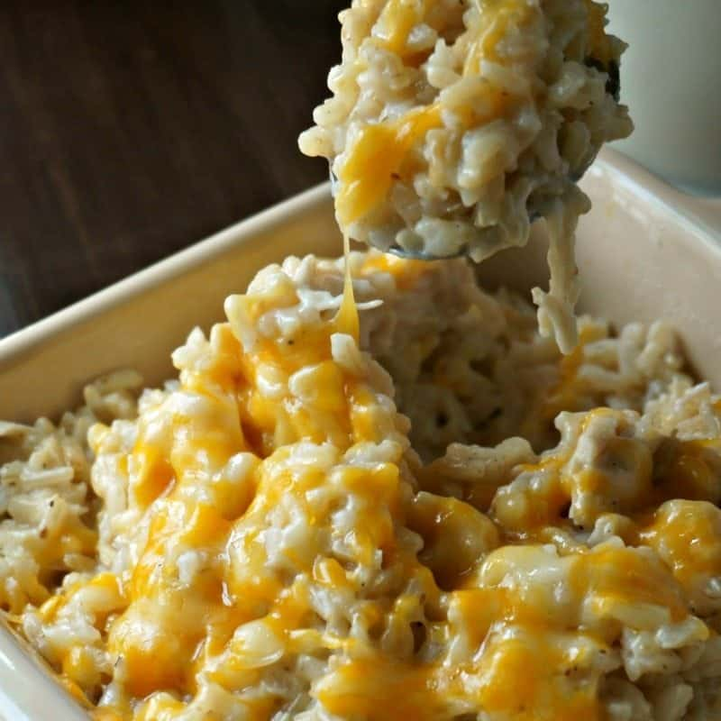

CrockPot Cheesy Chicken and Rice

Description
This is one of my favorite recipes that my mom makes, an adaptation of a cheesy chicken and rice cassarole, but with a twist!
This version is made totally in a crock pot! I love making this, because it is really easy, super flavorful, and convinient!
If you love cheese and chicken, this is the recipe for you.
Ingredients
- frozen breast tenderloin(10 - 12 strips)
- onion (1 whole onion, diced)
- chicken broth (4 cups)
- salt (1/2 tsp)
- pepper (1/2 tsp)
- garlic powder (1 tsp)
- instant rice (2 packs)
- cream of chicken soup (1 can)
- shredded cheese (4 cups)
Steps
- Add the chicken tenderloin, diced onion, chicken broth, cream of chicken soup, and seasonings to the crock pot.
- Allow to cook on high for ~4 hours.
- Once the chicken is completely cooked, remove from the liquid and shred or chop into smaller pieces, then place in pack in the crock pot.
- Cook the 2 packs of instant rice according to the packaging.
- Add the rice and the shredded cheese to the crock pot, then stir to combine.